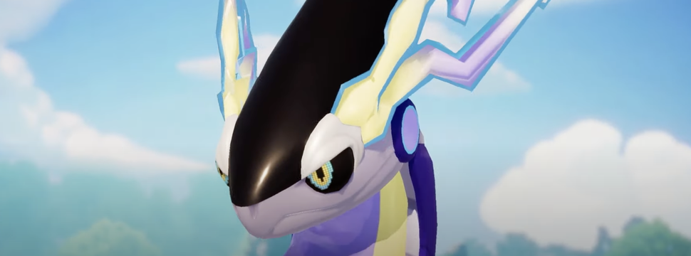
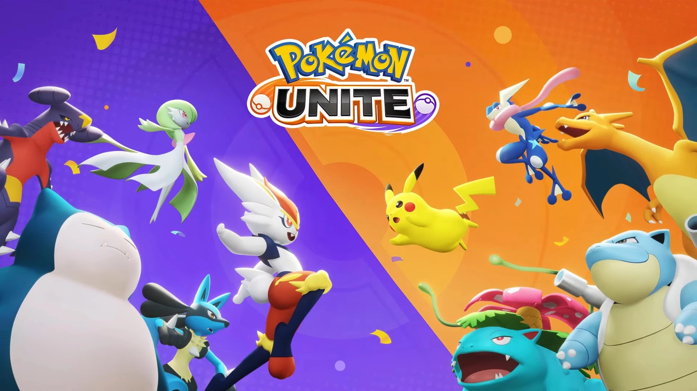

Pokémon UNITE: desbloqueie Miraidon em novo evento
Durante o Pokémon Presents desta terça (27), a Pokémon Company anunciou o lançamento de um evento para desbloquear Miraidon, lendário de Pokémon Scarlet e Violet, em…
por Breno Deolindo - 29/02/2024
Masaaki Hoshino, produtor de Pokémon Unite, fala como a comunidade impacta o jogo
Pokémon Unite foi lançado há alguns meses e fez um enorme sucesso. Para entender melhor o que o jogo vai oferecer nos próximos meses, tivemos a oportunidade de entrevistar…
por Marina Val - 29/02/2024

As diferenças entre Ataque e Ataque Especial em Pokémon Unite
O que é Ataque e Ataque Especial? Pokémon Unite apresenta uma série de Pokémon para os jogadores se divertirem em diferentes classes, desde aqueles que gostam de causar mais dano até os que preferem defender. Embora as Classes do jogo sejam realmente bastante difundidas e conhecidas en…
por Lucas Avancini - 27/02/2024

Pokémon Unite - Modo Ranqueado
Assim como outros jogos competitivos da franquia Pokémon, Pokémon Unite também apresenta um Modo Ranqueado, que permite que o jogador suba de Ranque conforme seu número de vitórias. Esse modo é liberado assim que o jogador atinge o nível 5 e consegue 5 Licenças Unite. Vale lembrar que, caso seus…
por Lucas Avancini - 01/02/2024